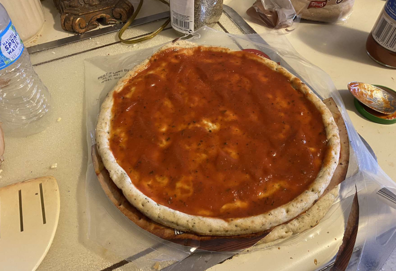
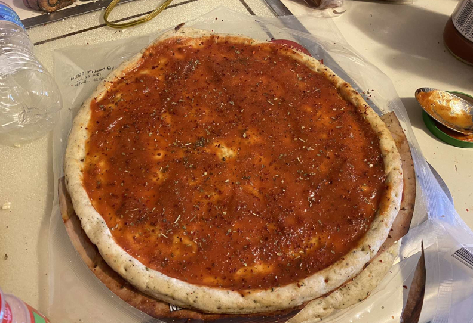
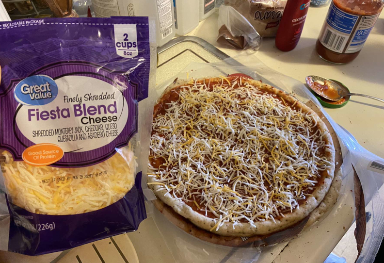
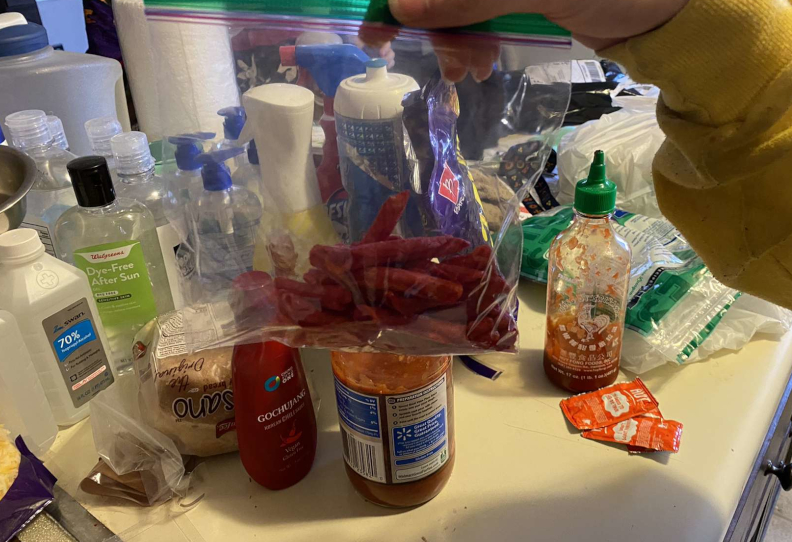
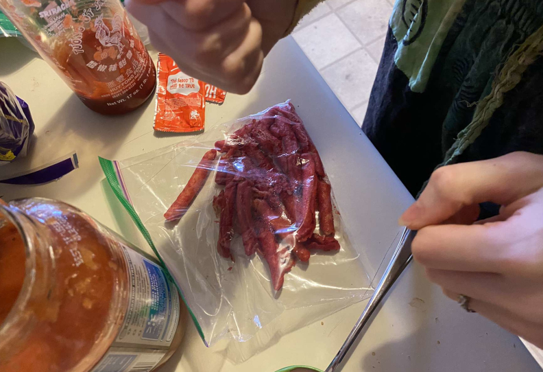
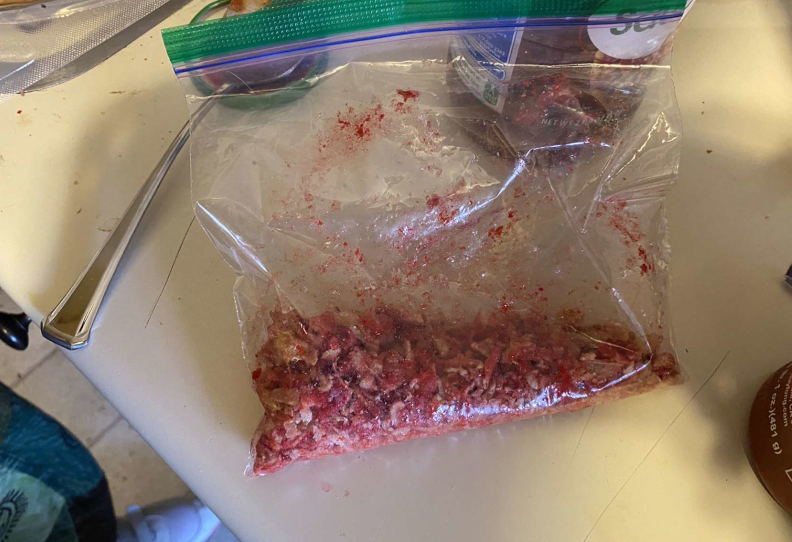
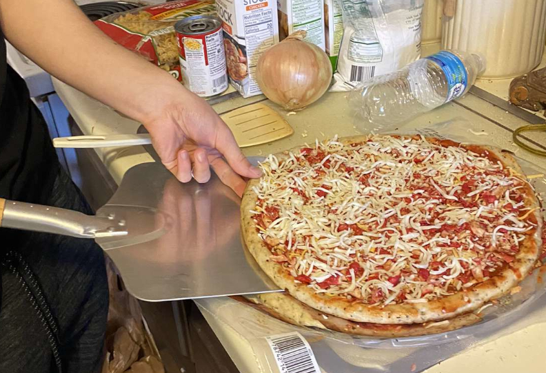
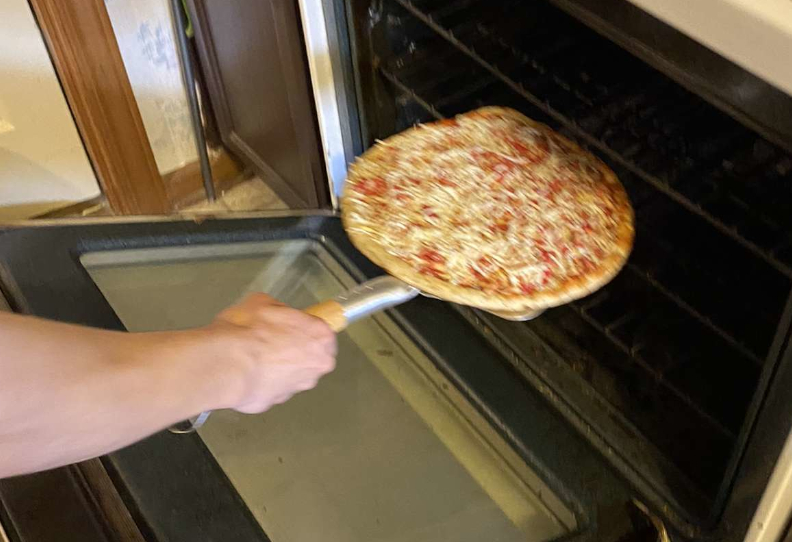
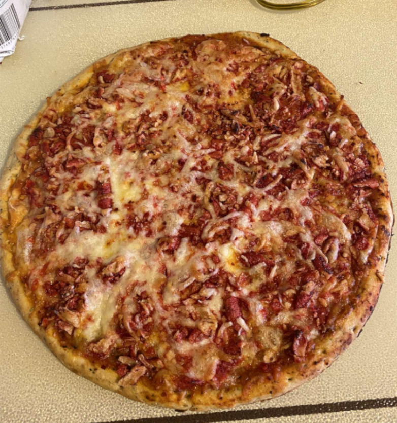

Takis Pizza Recipe
This is our Takis pizza recipe, it may be too spicy for some so take that into account, We only made a cheese pizza here to keep things simple, but you can add pepporoni or any other non-pineapple ingrediants you want.
Ingredients:
- Great value pizza crust, - $2.97
- Great value pizza sauce, 23.9 oz - $1.58
- Great Value Finely Shredded Fiesta Blend Cheese, 8 oz - $2.22
- Great Value Finely Shredded Parmesan Cheese, 6 oz - $1.98
- Takis, 20 oz - $4.42
- Garlic powder, Onion powder, Other Seasonings
- (optional) Gochujang and Gochujaru
Preheat oven to 450° and spread spread pizza sauce on crust

Season sauce with spices. We used garlic powder, gochujang, gochujaru, onion powder and italian seasoning

Add cheese

Put takis into bag and crush them into smaller chunks



Place more cheese and Takis chunks on the pizza

Bake pizza for 10-11 minutes

Enjoy!!

Shopping list